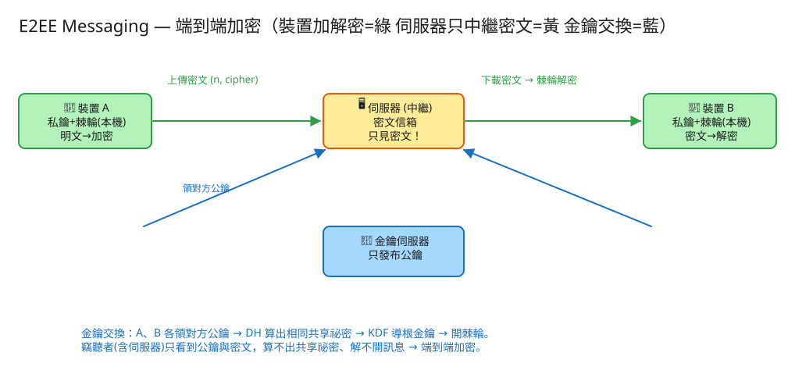

B 即時連線/同步 看故事就懂 輕鬆讀 25 分鐘
你用 WhatsApp / Signal 傳訊息給朋友。中間經過電信、伺服器、一堆網路設備。 「端到端加密」（End-to-End Encryption，E2EE）保證的就是：只有你和你朋友兩端能讀這則訊息， 中間經手的所有人（包含提供服務的公司自己）都看不到內容，只看得到一團亂碼。
很多人以為：「加密不就是把字變成亂碼嗎？很簡單啊。」——加密演算法本身確實是現成的。 真正難、面試真正考的是這兩件事：
💭 停一下：為什麼「永遠用同一把鑰匙」很危險？
別被「密碼學」嚇到。整件事其實就是闖 4 關，一關一關來：
你和朋友從沒見面，要靠不信任的郵差協商出「同一把只有你倆知道」的鑰匙。
👉 算出共同顏色後，再「磨」一下（這步叫 KDF，把共享祕密整理成正式的鑰匙）就能拿來鎖箱子了。
有了共同鑰匙，把訊息（明文）用它鎖成亂碼（密文）。
這是全題的心臟。不要永遠用同一把鑰匙，而是每傳一封就把鑰匙往前推一格、舊的銷毀。
這個「鑰匙一直往前推、舊的算不回來」就是前向保密。真實的 Signal 還會再疊一層（定期重新交換鑰匙），讓「萬一被偷後，未來也能恢復安全」——叫後向保密。兩層合起來叫 Double Ratchet（雙棘輪）。
加密好的密文交給伺服器，由它存轉（對方離線就先暫存、上線再給）。但伺服器只經手箱子，沒有鑰匙。
👉 這一關沿用 ⑦ Messenger 的存轉與離線投遞——架構幾乎一樣，差別只在「送的是密文」。
工程上的「取捨」聽起來很抽象。換個方式記：這個系統最怕三件事，每個設計都是為了避開某個「怕」。

✏️ 用 Excalidraw 開啟編輯（diagram.excalidraw）白話導讀，由左到右一路看：
看完上面，這些詞你其實都已經懂了，這裡只是把「工程術語 ↔ 白話」對起來，Part 2 會用到：
| 端到端加密 (E2EE) | 只有收發兩端能讀，中間所有人（含伺服器）只看到亂碼 |
| 明文 / 密文 | 原本看得懂的字 / 被鎖成的亂碼 |
| 私鑰 / 公鑰 | 自己的祕密色（絕不外傳）/ 混過可公開的色（給對方算共同鑰匙用） |
| Diffie-Hellman (DH) | 「混顏料魔術」：不見面也能各自算出同一把鑰匙，偷聽的人算不出 |
| 共享祕密 | 雙方各自算出來、一模一樣、只有他倆知道的那個數字 |
| KDF | 把共享祕密「磨」成正式鑰匙的步驟（單向，磨過回不去） |
| 對稱加密 | 同一把鑰匙又能鎖又能開（快，拿來鎖每封信） |
| 棘輪 (ratchet) | 只能往前轉的齒輪：每封信把鑰匙推進一格、舊的燒掉 |
| 前向保密 | 舊鑰匙被偷，以前的信仍解不開（因為早燒了） |
| 後向保密 / 自我修復 | 鑰匙一度被偷後，以後的信還能恢復安全 |
| Double Ratchet | Signal 的兩層棘輪：前向 + 後向保密都有 |
| prekey（預付金鑰） | 先存一批「一次性公鑰」在伺服器，讓對方離線也能先建鑰匙 |
| 中間人攻擊 (MITM) | 郵差偷換公鑰、冒充對方來偷看的攻擊 |
| 安全碼 / 公鑰指紋 | 雙方核對的一串碼，對上了代表中間沒被掉包 |
| 中繼資料 (metadata) | 「誰幾點跟誰聊、多頻繁」——加密藏不住的部分 |
我們估幾個關鍵數字（數字不必背，重點是感受它的「形狀」）：
| 估什麼 | 大概數字 | 所以呢？ |
|---|---|---|
| 有多少裝置 | 2 億人 × 1.5 台 ≈ 3 億把鑰匙對 | 每台都要管自己的私鑰與棘輪狀態（在裝置上，不在伺服器） |
| 一次性鑰匙（prekey） | 每台先存 100 把 ≈ 300 億把 | 讓對方離線也能先建鑰匙；用完要補 |
| 每天多少則訊息 | 每人 40 則 ≈ 每秒 9 萬筆（峰值 28 萬） | 跟一般 Messenger 差不多；瓶頸還是「送」而非「加密」 |
| 加密多花多少 | 每則多附一點點鑰匙資料 | 密文比明文稍大，可接受；計算在裝置端，不壓伺服器 |
💭 停一下：為什麼說「加密不會壓垮伺服器」？
這題只要記住幾張「點餐單」：
① 上傳我的公鑰（裝置產生私鑰，只上傳公鑰）
POST /api/v1/keys
給我：{ 身分公鑰, 一批一次性公鑰(prekey) }
我回：201「收到！這是你的安全碼（指紋），請和朋友核對」重點：上傳的是公鑰，私鑰永遠留在手機裡。伺服器握有再多公鑰也解不開訊息。
② 領對方的公鑰（要開始聊天前）
GET /api/v1/keys/{對方}
我回：{ 對方身分公鑰, 一把一次性公鑰 } ← 領走那把一次性的就用掉了③ 送密文（伺服器只中繼，看不到內容）
POST /api/v1/messages
給我：{ 寄給誰, 棘輪序號 n, 密文, 鑰匙材料 header }
我回：201（存著、對方上線就轉給他）④ 收密文（自己手機解密）
GET /api/v1/inbox?after_id=120
我回：[ { 誰寄的, n, 密文, header }, ... ] ← 手機端用棘輪鑰匙解開注意 ③④ 經手的都是密文。伺服器這份「點餐單」永遠收不到明文。
公鑰目錄：每人的公鑰束（給人來領、算共同鑰匙用）。
密文信箱：每則只有 寄給誰、棘輪序號 n、密文——沒有明文、沒有鑰匙。
所以伺服器被駭 / 被法院要資料，交得出的只有一堆亂碼。
身分私鑰（自己的祕密色）＋棘輪狀態（每個對話的發送鏈鑰匙、接收鏈鑰匙、推到第幾格）。 只要這些不離開手機，伺服器無論如何都解不開訊息。
| 哪裡會塞車 | 怎麼拓寬 |
|---|---|
| 對方離線，沒辦法當場「混顏料」交換鑰匙 | 一次性預付金鑰（prekey）：先存一批公鑰在伺服器，對方離線你也能領一把先把鑰匙建好 |
| 一次性鑰匙被領光了 | 裝置上線時補一批新的上去；真的用完先退回用備援鑰匙 |
| 群組聊天：N 個人兩兩配對鑰匙會爆炸 | 用「群組鑰匙（sender key）」：每人發一把給群裡所有人，群播只加密一次 |
| 多裝置：手機、平板、電腦鑰匙要對齊 | 每台各有自己的鑰匙，送訊息時對每台各加密一份；新裝置要重新驗證 |
| 送密文的長連線/投遞量大 | 直接沿用 ⑦ Messenger 那套（連線註冊表 + 離線佇列），只是內容換成密文 |
「Part 1 的三個怕」是核心取捨。這裡補幾個常被面試官追問的：
讀十遍不如玩一遍。這題有一個真的可以跑的小程式，讓你親眼看到「金鑰交換 + 棘輪 + 伺服器只見密文」：
# 啟動（在這題的 demo 資料夾裡）
cd demo
php -S localhost:8060 -t public
# 然後瀏覽器打開 http://localhost:8060玩過 demo 了，來掀開引擎蓋看看「那幾關到底是哪幾段程式做的」。 好消息：核心邏輯很短，剛好對應前面講的關卡。不用會 PHP，我把程式翻成白話、只留關鍵那幾行，看註解就懂。
公開一個底色 g、一個大數 p。每人選祕密色（私鑰），算出混色（公鑰）寄出去：
公鑰 = g 的 (私鑰) 次方，再對 p 取餘數 // 混色：很難反推回私鑰
// 雙方交換公鑰後，各自算共同鑰匙：
共享祕密 = (對方公鑰) 的 (自己私鑰) 次方，對 p 取餘數
// 神奇：A 和 B 算出來「一模一樣」，但偷聽的郵差只看到兩個公鑰，算不出共享祕密這就是「混顏料魔術」。demo 用很小的數字（p=467）方便你看；真實系統用 2048 位元以上的大數或橢圓曲線，大到電腦窮舉到宇宙毀滅也算不出來。
共享祕密不直接當鑰匙，先用一個單向函式（hash）「磨」一下，再拿來鎖訊息：
根鑰匙 = hash("KDF" + 共享祕密) // 把祕密整理成正式鑰匙
密文 = 明文 XOR 鑰匙 // demo 用 XOR 示意「上鎖」（真實用 AES）為什麼用 hash？因為 hash 是單向的：給輸入算得出輸出，給輸出反推不回輸入。這個「單向」性質，正是下一步棘輪能「燒掉舊鑰匙」的關鍵。
這是全題的心臟。每發一則，就把鏈鑰匙用 hash 單向推進到下一把：
function 取下一把發送鑰匙() {
這封的鑰匙 = hash("msg" + 目前鏈鑰匙)
目前鏈鑰匙 = hash("ratchet" + 目前鏈鑰匙) // ← 單向推進！舊的被覆蓋
return 這封的鑰匙
}關鍵在那行「目前鏈鑰匙 = hash(...)」：因為 hash 單向，從新鑰匙算不回舊鑰匙。所以舊鑰匙一旦被推進覆蓋，就永遠救不回來——這就是前向保密。收的一方有一條對應的「接收鏈」，同步往前推，剛好能解開每一封。
送出去時，伺服器（信箱）只記下這些，完全沒有明文、沒有鑰匙：
信箱存：{ 寄件人, 收件人, 棘輪序號 n, 密文 } // 就這些，沒有明文！
// 收件人下載後，用自己的接收鏈鑰匙(第 n 格)解開 → 還原明文序號 n 是讓收件人知道「這封要用接收鏈推到第幾格的鑰匙來解」。伺服器看得到 n，但沒有鏈鑰匙，所以照樣解不開。
| 關卡（前面講的） | 哪個檔 | 關鍵那段 |
|---|---|---|
| ① 混顏料交換鑰匙 | ToyCrypto | dhSharedSecret() |
| ② 磨成鑰匙 + 上鎖 | ToyCrypto | kdf() / encrypt() |
| ③ 棘輪推進（前向保密） | ToyCrypto / DeviceStore | ratchet() / nextSendKey() |
| ④ 伺服器只存密文 | Mailbox | put()（只收 from/to/n/cipher） |
👉 重點：真實系統會把「小數字 DH + XOR」換成「Curve25519 + AES-GCM + Double Ratchet」， 但上面這幾段邏輯的「形狀」一字不變：交換出共享祕密 → 導鑰匙 → 每封推進 → 伺服器只存密文。讀懂這個小 demo，你就讀懂了這題的核心。
先不要看答案，自己用講給朋友聽的方式回答看看（講得出來才是真的懂）：
端到端加密 = 把信鎖進只有收發兩端有鑰匙的保險箱，郵差（伺服器）只送箱子、打不開。
4 個關卡：① 混顏料交換出同一把鑰匙（DH）→ ② 把信鎖成密文（KDF 導鑰匙 + 對稱加密）→ ③ 棘輪（每封換鑰匙、用完就燒 = 前向保密）→ ④ 伺服器只存密文（沿用 Messenger 存轉）。
3 個怕：怕中間人（郵差掉包公鑰 → 核對安全碼）、怕一把鑰匙陪葬全部（棘輪一封一把）、怕以為加密就全隱形（中繼資料藏不住）。
工程細節一句話：累的是金鑰管理不是加密運算；東西分兩半放（公鑰/密文在伺服器，私鑰/棘輪只在手機）；離線靠 prekey、群組靠 sender key；E2EE 換來隱私、犧牲了搜尋/審核/備份等伺服器端功能。
想看更精簡、面試速查用的版本？👉 前往完整版（同樣內容的工程速查格式）。